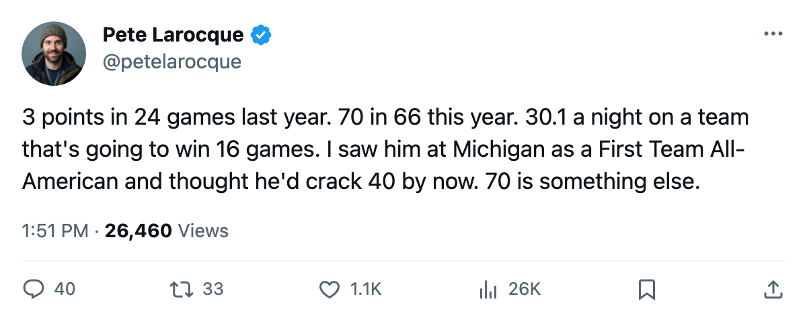

The 7th Pick From 2001 Went From 3 Points to 70. His Team Has 51.
Mike Komisarek plays 30.1 minutes a night for a 16-win club on $1.10M that expires in a year. The Norris conversation is alive whether Montreal wants it or not.
 Pete LarocqueScouting editor · The Prospect File
Pete LarocqueScouting editor · The Prospect File
Mike Komisarek76 scored 3 points in 24 games last season, averaging 11.8 minutes a night out of Montreal's bottom pair. This year he carries 70 points in 66 games at 30.1 minutes a game for a club with 51 points and a -50 goal differential.
The  Montreal Canadiens Canadiens are 16-38-5.
Montreal Canadiens Canadiens are 16-38-5.  Jose Theodore85 has an 89 overall in net. Komisarek plays the minutes, carries the points, and sits at 80 overall, six above his base of 77 on the Bureau's Development Index, with a 90 potential that still has room to run.
Jose Theodore85 has an 89 overall in net. Komisarek plays the minutes, carries the points, and sits at 80 overall, six above his base of 77 on the Bureau's Development Index, with a 90 potential that still has room to run.
The Norris math with a 51-point denominator
Robert Svehla won the Norris last June on a Toronto club that won the Cup. That was the easy case: best defenseman on the best team. This year the conversation is harder. Komisarek's 70 points lead all defensemen in the league. None of the Norris winners in recent memory produced that kind of offense on a team this far from the playoffs.
He is 23, born in West Islip, New York, drafted 7th overall in 2001 out of the University of Michigan where he was a First Team All-American in 2002. He played 80 college games, 46 points, 145 penalty minutes. Then 24 NHL games and 3 points last year. Nobody outside Montreal's building would have flagged that as the setup for 70.
What the grades say about the leap
The Book's tools explain the jump. CHKG 90, SPEE 87, AGGR 86, PUCK 86, SHPW 85, PASS 83. That is not a stay-at-home defenseman's profile. A 90 checking grade and an 87 speed on a man playing 30.1 minutes with 59 assists means he is driving transitions and winning his own zone. The Index at +6 confirms the current form sits well above where the Book expected him.
The contract
Komisarek is on $1.10M with 1 year left. His team's salary sits at $45,262,120. If he stays at 70 points and the Index holds, that number is not close to market for a 23-year-old defenseman with 90 potential and a +6 trend. The question for Montreal is whether a 51-point team can hold a player like this when the free-agent market opens in July, or whether the rebuild timeline and the cap math force a conversation the front office does not want at the trade deadline in 15 days.
The late-birthday note
Born January 19, 1982. In a draft class where the late-January kids are still 23 at the trade deadline, Komisarek has a full season of 30-minute hockey at age 23 with 1 year of control left. He is younger than the Norris winners the league has typically rewarded.
The 7th pick from 2001 had 3 points in 24 games. The man who put up 70 points this year plays for a team with 51 of them and wears a sweater the city has stopped filling. The contract says Montreal has one year to figure out what that means.
